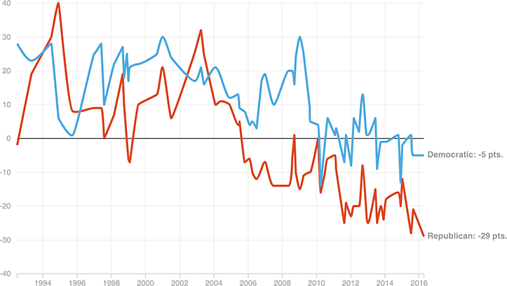

Record-Low Unfavorability Marks For The GOP
Net favorability (the share of people who view a party favorably minus the share who view it unfavorably) has fallen off for both parties, but for the GOP, it’s stuck in the basement right now, with a 29-percentage-point difference.
